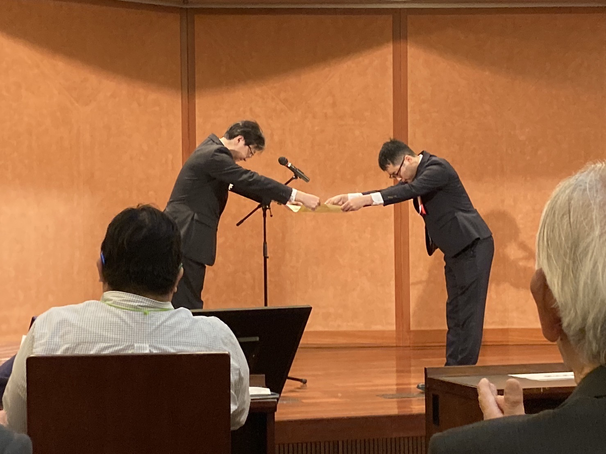

日本都市計画学会論文奨励賞を受賞しました
投稿｜2023年06月04日 更新｜
この度，わたしの学位論文『構築費用の空間的差異と移動費用を考慮したネットワークデザインに関する研究』が，
2022年度日本都市計画学会論文奨励賞を受賞しました．

表彰式
思えば，わたしの初めての論文投稿は日本都市計画学会の都市計画論文集に向けてでした． その研究（2019）は， "desire path"という一見するとトリビアルな現象を扱ったものだったのですが， 日本都市計画学会全国大会での発表のときに，たくさんの研究者の方々から面白がってもらえたこと，それが大きな励みになったことを思い出します． その体験が今でも研究を楽しいと思える原動力になっており，そのきっかけをくれた日本都市計画学会から論文奨励賞をいただけることほど，光栄なことはありません．
本受賞は，博士論文が都市計画学的に面白いと思えるものであったことを確認する機会になりました． これからも，ネットワークデザインの在り方とそれを実現するための数理的手法について追究していきたいと思います．